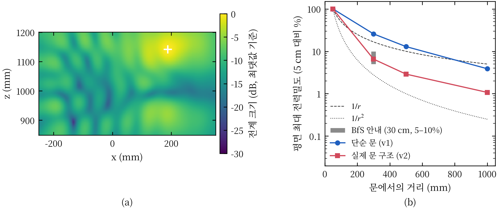
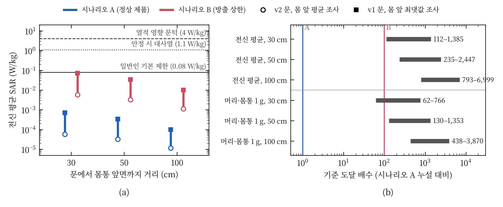
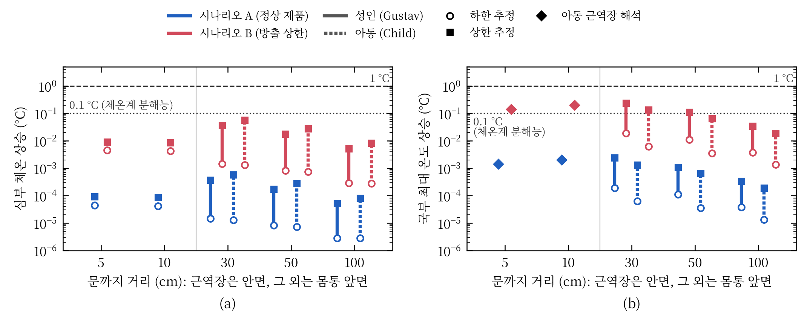

제1회 라이너 스콜라 연구공모전
작성일: 2026년 11월 ○일
“작동 중인 전자레인지 앞에 서 있으면 해롭다”는 통념을 노출 기준의 생리학적 근거, 전자레인지 누설의 실측 수준, 인체 흡수와 온도 상승의 세 주제로 나누어 검토하였다. 기준 문서와 체계적 문헌고찰, 누설 측정 조사, 인체 흡수·온도 계산 연구를 비교하고, 문헌만으로 답할 수 없는 “실제 사용 거리에서 사람이 흡수하는 양”은 3차원 전자기 해석으로 보완하였다. 기준이 막으려는 확인된 위해는 조직 가열이며, 그 문턱은 전신 평균 4 W/kg, 일반인 기준은 그 1/50인 0.08 W/kg이다. 측정 조사에서 가정용 제품의 누설은 대부분 방출 상한의 약 1% 수준이었다. 해석 결과, 정상 제품 앞 30 cm–1 m에 선 성인과 7세 아동의 비흡수율(SAR)은 기준의 2% 미만, 온도 상승은 0.003 °C 미만이었고, 문에 얼굴을 5–10 cm까지 댄 아동도 기준의 1% 미만이었다. 따라서 정상 제품에 대해 이 통념은 지지되지 않는다. 다만 문이 손상되어 누설이 방출 상한에 이르면 가장 보수적인 가정에서 국부 기준에 근접하거나 넘을 수 있으므로, 위험은 “앞에 서 있는 것”이 아니라 “손상된 제품”이라는 조건에서만 성립한다.
전자레인지는 2.45 GHz 마이크로파로 음식 속 물을 데운다. 같은 전자파가 문틈으로 새어 사람도 데우거나 해칠 수 있다는 걱정은 오래되었고, “돌아가는 동안 앞에 서 있지 말라”는 조언이 지금도 흔하다. 반면 2.45 GHz 광자의 에너지는 약 10⁻⁵ eV로 분자 결합을 끊기에 턱없이 작아, 가능한 위해는 열적 작용으로 좁혀진다. 즉 이 통념의 검증은 “누설된 에너지가 몸을 의미 있게 데울 만큼인가”라는 양의 문제이다.
이 문제가 쉽게 풀리지 않는 이유는 두 계통의 기준이 서로 다른 양을 규정하기 때문이다. 제품 방출 기준은 문 외면 5 cm에서 전력밀도를 판매 전 10 W/m², 사용 중 50 W/m² 이하로 제한한다 [1], [2]. 인체보호기준은 몸이 흡수하는 전력인 비흡수율(SAR, W/kg)을 제한한다 [3], [4]. 5 cm의 측정값은 사람이 서는 위치의 노출도, 몸이 흡수하는 양도 직접 알려 주지 않는다.
이 글이 답할 연구 질문은 다음과 같다. “정상 동작하는 가정용 전자레인지 앞 30 cm–1 m에 선 성인과, 문에 얼굴을 5–10 cm까지 댄 아동이 흡수하는 전자파 에너지와 그로 인한 온도 상승은 인체보호기준과 열적 영향 문턱에 비해 어느 수준인가?”
대상은 2.45 GHz 가정용 전자레인지의 문 누설이며, 정상 제품과 사용 중 방출 상한(50 W/m²) 제품을 모두 다루었다. 비열적 영향(암, 자각 증상)은 개별 연구 대신 2024년 WHO 의뢰 체계적 문헌고찰 [5], [6]로 검토하였다. 휴대전화처럼 송신기가 몸에 붙는 노출 연구는 주파수와 노출 조건이 달라 제외하였다. 인터록 고장으로 문이 열린 채 동작하는 상황은 결론의 적용 범위 밖으로 두고 참고로만 인용하였다.
문헌 검토. 2026년 10월 19–22일에 웹 검색엔진과 학술 데이터베이스 서지 레코드(PubMed, IEEE Xplore, IOP, 출판사 페이지)를 통해 “microwave oven leakage survey”, “microwave oven leakage SAR”, “2.45 GHz whole-body SAR child plane wave”, “lens temperature 2.45 GHz”, “ICNIRP basic restriction rationale”, “전자레인지 전자파 누설” 등의 검색어로 1970–2025년 문헌을 찾았다. 포함 기준은 (1) 가정용 전자레인지 누설의 측정·해석, (2) 2.45 GHz 부근 인체 흡수 또는 온도 계산, (3) 기준 문서와 그 근거 문헌이다. 원문 전문을 열람하지 못한 문헌은 초록과 서지 레코드로 확인한 범위에서만 인용하였다. KCI, RISS, DBpia는 직접 검색하지 못하였다. [라이너 스콜라 활용: 실제로 사용한 단계(예: 문헌 탐색 검색어와 검색일, 서지·인용 대조, 연구 결과 비교)와 용도를 기입] 문헌 탐색, 서지 확인과 초안 작성에는 AI 도구(Anthropic Claude)도 사용하였으며, 모든 수치와 결론은 저자가 원자료와 대조하여 검토하였다.
수치 해석. 문헌에는 “실제 사용 거리에서 사람이 흡수하는 양”을 직접 다룬 연구가 드물어, 상용 전자기 해석 프로그램(CST Studio Suite 2019, 시간영역 유한적분법) [7]으로 이를 계산하였다. 국내 판매 23 L 제품 치수 [8]의 오븐을 두 가지로 모델링하였다. 하나는 문 둘레 전체가 새는 단순 문(v1, 보수적 상한)이고, 다른 하나는 유리창, 타공판, λ/4 초크를 넣은 실제 문 구조(v2)이다. 누설 크기는 방출 기준의 시험 조건대로 5 cm 최댓값을 정상 제품 수준 0.5 W/m²(시나리오 A, 상한의 1%)와 방출 상한 50 W/m²(시나리오 B)로 맞추었다. 인체는 해부학적 복셀 모델 성인 남성(38세, 176 cm)과 아동(7세 여아, 115 cm) [7]을 사용하였다. 30 cm 이상은 평면파 조사로 SAR을 구하고, 문에 얼굴을 댄 5–10 cm는 오븐과 아동 상반신을 함께 해석하였다. 온도 상승은 Pennes 생체 열전달 방정식 [9]의 2차원 정상상태 해(상한)와 30분 무손실 가열(심부 체온 상한)로 추정하였다.
노출 기준은 동물 실험에서 확인된 가열 문턱에서 출발한다. 학습 과제를 하던 쥐와 원숭이에 전자파를 쬐면 전신 평균 SAR 약 4 W/kg에서 과제를 멈추었고, 이때 심부 체온은 약 1 °C 올랐다 [10]. 국제비전리방사선방호위원회(ICNIRP)는 이를 건강 영향 문턱으로 보고 일반인에 1/50을 적용해 전신 0.08 W/kg을 정하였으며, 2020년 개정에서도 이 값을 유지하였다 [3], [10]. 국내 기준도 같다 [4]. 국부 노출은 조직 온도 상승 한도로부터 머리·몸통 1.6 W/kg(1 g, 국내) 또는 2 W/kg(10 g, ICNIRP)을 둔다 [3], [4].
눈은 혈류가 적어 따로 연구되었다. 2.45 GHz를 100분 쬔 토끼에서 수정체가 약 41 °C에 이를 때(유리체 SAR 약 138 W/kg) 백내장이 생겼다 [11]. 비열적 영향에 대해서는 2024년 WHO 의뢰 체계적 문헌고찰들이 일반인 노출과 암 [5], 자각 증상 [6] 사이에 일관된 관련을 찾지 못하였다. 참고로 성인 남성의 기초대사량은 약 80 W(1.1 W/kg)이므로 [12], 전신 기준 0.08 W/kg은 몸이 가만히 있어도 내는 열의 약 7%이다.
이 주제의 문헌들은 서로 일치한다. 위해의 근거는 가열이며, 기준은 그 문턱에 50배의 여유를 두었다. 따라서 이 글에서는 SAR을 기준과 비교하고, 온도 상승을 문턱(1 °C)과 비교한다.
표 1. 전자레인지 노출 평가에 관련된 두 계통의 기준
| 구분 | 대상 | 일반인·제품 한도 | 근거 |
|---|---|---|---|
| 제품 방출 [1], [2] | 문 외면 5 cm 전력밀도 | 판매 전 10, 사용 중 50 W/m² | 제품 시험 기준 |
| 인체보호 [3], [4] | 전신 평균 SAR | 0.08 W/kg | 4 W/kg(심부 +1 °C) [10]의 1/50 |
| 인체보호 [3], [4] | 국부 SAR | 1.6 W/kg(1 g), 2 W/kg(10 g) | 조직 온도 상승 한도 |
| 참고 문턱 [11] | 토끼 수정체 백내장 | 유리체 약 138 W/kg | 2.45 GHz, 100분 |
초기 측정 조사는 통념이 생긴 배경을 보여 준다. 연방 방출 기준이 시행되기 전인 1970년 미국 아칸소주 조사에서는 일부 제품이 당시 기준(100 W/m²)을 넘었다 [13]. 반면 기준 시행 후 캐나다 보건부의 2000년 조사에서는 판매 전 제품 60대가 모두 기준을 지켰고 사용 중 제품 약 100대 중 1대만 방출 상한을 넘었다 [14]. 독일 연방방사선방호청(BfS)은 가정용 제품의 평균 누설이 상한의 약 1%이고 30 cm에서 표면 값의 5–10%로 줄어든다고 안내한다 [15]. 공간 분포를 계산·측정한 연구도 있으나 인체 흡수는 산출하지 않았다 [16].
해석 결과는 측정 조사와 일치하였다. 실제 문 구조(v2)에서 누설장은 30, 50, 100 cm에서 5 cm 값의 6.5%, 2.9%, 1.1%로 감쇠하여 BfS의 5–10%와 맞았다(그림 1). 문 둘레 전체가 새는 단순 문(v1)은 26%, 13%, 3.9%로 3–4배 느리게 감쇠하여 보수적 상한 역할을 하였다. 두 가지는 측정값 해석에 중요하다. 첫째, 5 cm는 반파장(6.1 cm)보다 가까운 근역장이어서 전계로 환산한 전력밀도가 실제 전력 흐름보다 최대 1.9배 컸다. 둘째, 누설은 거리 제곱보다 완만하게 줄어 5 cm 값에 역제곱 법칙을 적용하면 v1에서 30 cm–1 m 노출을 10–15배 과소평가한다. 즉 5 cm 측정값은 그대로 인체 노출로 읽을 수 없으며, 거리에 따른 실제 감쇠를 따로 구해야 한다.

그림 1. 누설장 해석 결과. (a) 실제 문 구조(v2) 문 외면 5 cm 평면의 전계 분포. (b) 평면 최댓값의 거리 감쇠(5 cm 값 대비). 회색 구간은 측정 기반 보고값(30 cm에서 5–10%) [15]. 출처: 본 연구 해석.
선행 계산 연구는 특정 상황에서 흡수와 온도를 다루었다. 접촉형 문 앞 100 mm 이내의 흉부 모델에서 국부 SAR(10 g)과 온도 상승은 기준보다 매우 낮았다 [17]. 눈 모델에 50 W/m²를 조사한 계산에서도 수정체 온도 상승은 백내장 문턱보다 매우 작았다 [18]. 아동에 대해서는 평면파 노출 연구들이 같은 전력밀도에서 아동의 전신 SAR이 성인보다 크고, 일반인 참고 수준(10 W/m²)에서 기본 제한을 20–45% 넘을 수 있다고 보고하였다 [19]–[22]. GHz 대역 흡수는 체표면적에 지배되고 아동은 체중당 체표면적이 크기 때문이다 [23], [24]. 이 연구들은 기준 자체의 보수성을 다루었을 뿐, 실제 전자레인지 앞 거리에서의 흡수량은 제시하지 않았다.
표 2. 전자레인지 누설과 인체 흡수에 관한 선행 연구와 본 연구의 비교
| 문헌 | 방법 | 대상·조건 | 주요 결과 |
|---|---|---|---|
| [13] | 측정 조사 | 1970년, 기준 시행 전 제품 | 일부 제품이 당시 기준(100 W/m²) 초과 |
| [14] | 측정 조사 | 판매 전 60대, 사용 중 약 100대 | 사용 중 1대만 방출 상한 초과 |
| [15] | 측정 요약 | 가정용 제품 | 평균 누설은 상한의 약 1%, 30 cm에서 표면 값의 5–10% |
| [16] | 해석·측정 | 실내 공간 | 누설의 공간 분포, 인체 흡수 미산출 |
| [17] | 유한요소 해석 | 접촉형 문, 흉부, 100 mm 이내 | 국부 SAR과 온도 상승이 기준보다 매우 낮음 |
| [18] | 전자기·열 해석 | 안구, 50 W/m² | 수정체 온도 상승이 백내장 문턱보다 매우 작음 |
| [19]–[22] | 전자기 해석 | 아동·성인, 평면파 | 참고 수준에서 아동 전신 SAR이 기준을 20–45% 초과 가능 |
| [25] | 측정·모델 | 인터록 고장 오븐에 손 삽입 | 5초 노출에 통증(고장 상황) |
| 본 연구 | 전자기·열 해석 | 성인·아동, 5 cm–1 m, 정상·상한 제품 | 정상 제품에서 기준의 2% 미만, 0.003 °C 미만 |
해석에서도 같은 경향이 나왔다. 입사 1 W/m²당 전신 SAR은 아동이 성인의 1.6–1.7배였고, 참고 수준에서 아동은 기본 제한의 109%였다. 그러나 전자레인지 누설은 참고 수준보다 훨씬 낮다. 정상 제품(시나리오 A) 앞 30 cm–1 m에서 성인의 전신 SAR은 기준의 0.014–0.90%, 머리·몸통 1 g SAR은 0.026–1.6%였고, 아동은 각각 1.4%, 1.0% 이하였다(그림 2(a)). 가장 보수적인 가정에서도 기준에 닿으려면 누설이 정상 제품보다 전신 SAR은 72배(아동), 머리·몸통 1 g SAR은 62배(성인) 이상 늘어야 한다(그림 2(b)). 국부 온도 상승은 성인 0.0024 °C, 아동 0.0013 °C, 심부 체온 상승은 30분 무손실 가정에서도 0.0006 °C 이하로, 임상 체온계 눈금(0.1 °C)보다 두 자릿수 작았다(그림 3).

그림 2. (a) 거리별 전신 평균 SAR과 생리 기준선(성인 실선, 아동 점선; 막대 아래 끝은 실제 문·몸 앞 평균, 위 끝은 단순 문·몸 앞 최댓값 조사; ◆는 아동 근접 해석). (b) 기준 도달에 필요한 누설 증가 배수(정상 제품 = 1, 방출 상한 = 100). 단위 W/kg. 출처: 본 연구 해석.

그림 3. (a) 30분 노출 시 심부 체온 상승, (b) 국부 최대 온도 상승(성인 실선, 아동 점선, ◆ 아동 근접 해석). 하한은 문턱(4 W/kg에서 +1 °C)에 대한 비례, 상한은 열 손실이 없다고 가정한 값이다. 단위 °C. 출처: 본 연구 해석.
문에 얼굴을 댄 아동은 근역장이어서 평면파로 대신할 수 없다. 오븐과 아동 상반신을 함께 푼 결과, 정상 제품에서 머리 1 g SAR은 얼굴 5 cm에서 기준의 0.54%, 10 cm에서 0.84%였다(표 3). 흥미롭게도 국부 SAR은 10 cm가 5 cm보다 컸다. 누설 빔이 거리에 따라 위아래로 퍼져 턱 쪽 노출이 커졌기 때문이며, 근역장에서는 “가까울수록 크다”가 성립하지 않을 수 있다. 같은 5 cm 누설을 평면파로 가정하면 이 노출을 4–24배 과대평가하였다.
표 3. 문에 얼굴을 댄 7세 아동의 근접 해석 결과 (출처: 본 연구 해석)
| 항목 | 정상 제품, 5 cm | 정상 제품, 10 cm | 방출 상한, 5 cm | 방출 상한, 10 cm | 기준 |
|---|---|---|---|---|---|
| 머리 1 g SAR (W/kg) | 0.0086 | 0.0135 | 0.861 | 1.35 | 1.6 |
| 안구 평균 SAR (W/kg) | 0.0028 | 0.0020 | 0.281 | 0.198 | (토끼 백내장 약 138) |
| 국부 최대 온도 상승 (°C) | 0.0014 | 0.0020 | 0.14 | 0.20 | (문턱 1) |
방출 상한(시나리오 B)에서는 결과가 달라진다. 근접 아동의 머리 1 g SAR은 기준의 54–84%였고, 30 cm 앞 평면파 해석에서 단순 문과 최댓값 전신 조사를 동시에 가정하면 성인 국부 SAR이 162%, 아동 전신 SAR이 139%로 기준을 넘었다. 같은 조건에서 실제 문 구조와 몸 앞 평균을 쓰면 각각 13%, 6.5%였다. 온도 상승은 방출 상한에서도 0.25 °C 이하였다.
세 주제의 근거는 한 방향을 가리킨다. 기준 문헌은 위해가 가열이며 그 문턱이 4 W/kg라고 하고, 측정 조사는 실제 누설이 상한의 약 1%라고 하며, 해석은 그 누설이 사람에게 기준의 2% 미만, 온도로는 0.003 °C 미만의 흡수를 준다고 보였다. 접촉형 문과 눈을 다룬 선행 계산 [17], [18]도 같은 결론이었다(표 2). 이 연구는 이들을 “실제 사용 거리, 성인과 아동, 정상 제품과 상한 제품”이라는 하나의 틀로 연결하였다.
그럼에도 통념이 남은 이유는 세 가지로 해석된다. 첫째, 기준 시행 전 1970년 무렵에는 실제로 기준을 넘는 제품이 있었다 [13]. 둘째, 5 cm 방출 기준값을 사람이 받는 노출로 오해하기 쉽다. 이 값은 근역장 효과로 실제 전력 흐름을 최대 1.9배 과대평가하고, 사람은 보통 그보다 훨씬 멀리 있다. 셋째, 실제 위해 사례는 존재한다. 인터록이 고장 난 오븐에 손을 넣은 경우 5초 만에 통증이 생겼다 [25]. 그러나 이는 문이 열린 채 동작한 고장 상황으로, 문이 닫힌 정상 제품 앞에 서 있는 것과는 노출 조건이 근본적으로 다르다.
아동 연구 [19]–[22]가 보인 “참고 수준이 아동에게 덜 보수적”이라는 결과는 본 해석에서도 재현되었으나, 결론을 바꾸지는 않는다. 정상 제품의 누설은 30 cm에서도 참고 수준보다 약 80배 이상 낮기 때문이다. 다만 방출 상한 제품과 가장 보수적인 가정이 겹치면 국부 기준에 근접하거나 넘을 수 있으므로, 문이나 이음새가 손상된 제품은 사용을 중단하는 것이 타당하다.
검토한 근거에는 한계가 있다. 해석 결과는 한 가지 제품 형상과 두 인체 모델에 기반하며 실제 제품의 누설을 측정하지 않았다. 온도는 단면 밖 열전도를 무시한 2차원 상한이고, 선 자세와 정면 노출만 고려하였다. 아동 근접 해석은 상반신만 포함하였다. 측정 조사는 대부분 1970–2000년 북미·유럽 자료이며 국내 제품의 최근 조사는 찾지 못하였다. 그러나 해석의 여러 가정이 노출을 크게 잡는 방향이고 측정과 해석이 독립적으로 같은 결론에 이르므로, 정상 제품에 대한 판단은 다른 제품과 거리에도 적용할 수 있다고 본다.
연구 질문에 대한 답은 다음과 같다. 정상 동작하는 가정용 전자레인지 앞 30 cm–1 m에 선 성인과 아동의 SAR은 인체보호기준의 2% 미만, 문에 얼굴을 5–10 cm까지 댄 아동도 1% 미만이었고, 온도 상승은 열적 영향 문턱(1 °C)의 수백분의 일 이하였다. 기준이 막으려는 위해가 가열이고, 누설이 기준에 닿으려면 가장 보수적인 가정에서도 정상 제품의 60배 이상이 되어야 하므로, “작동 중인 전자레인지 앞에 서 있으면 해롭다”는 통념은 정상 제품에 대해 지지되지 않는다. 이 통념은 문이 손상되어 누설이 방출 상한 수준에 이른 제품이나 인터록 고장과 같은 특정 조건에서만 부분적으로 성립한다. 따라서 실용적인 조언은 “앞에 서 있지 말라”가 아니라 “문이 손상된 전자레인지는 쓰지 말라”이다.
[1] U.S. Food and Drug Administration. (n.d.). 21 CFR 1030.10 Microwave ovens. Electronic Code of Federal Regulations. https://www.ecfr.gov/current/title-21/chapter-I/subchapter-J/part-1030/section-1030.10
[2] International Electrotechnical Commission. (2024). IEC 60335-2-25:2024 Household and similar electrical appliances – Safety – Part 2-25: Particular requirements for microwave ovens, including combination microwave ovens (Ed. 8.0). https://webstore.iec.ch/en/publication/66759
[3] International Commission on Non-Ionizing Radiation Protection. (2020). Guidelines for limiting exposure to electromagnetic fields (100 kHz to 300 GHz). Health Physics, 118(5), 483–524. https://doi.org/10.1097/HP.0000000000001210
[4] 과학기술정보통신부. (2019). 전자파인체보호기준 (과학기술정보통신부고시 제2019-4호). 국가법령정보센터. https://www.law.go.kr/LSW//admRulInfoP.do?admRulSeq=2100000175532
[5] Karipidis, K., et al. (2024). The effect of exposure to radiofrequency fields on cancer risk in the general and working population: A systematic review of human observational studies. Environment International, 191, 108983. https://doi.org/10.1016/j.envint.2024.108983
[6] Bosch-Capblanch, X., et al. (2024). The effects of radiofrequency electromagnetic fields exposure on human self-reported symptoms: A systematic review of human experimental studies. Environment International, 187, 108612. https://doi.org/10.1016/j.envint.2024.108612
[7] Dassault Systèmes. (2019). CST Studio Suite 2019 (Version 2019.7) [Computer software]; Online Help, “Biological Data: CST Voxel Family.”
[8] Coolblue. (n.d.). Samsung MS23K3513AW/EN [Product specifications]. Retrieved October 22, 2026, from https://www.coolblue.be/en/product/945727/samsung-ms23k3513aw-en.html
[9] Pennes, H. H. (1948). Analysis of tissue and arterial blood temperatures in the resting human forearm. Journal of Applied Physiology, 1(2), 93–122. https://doi.org/10.1152/jappl.1948.1.2.93
[10] International Commission on Non-Ionizing Radiation Protection. (1998). Guidelines for limiting exposure to time-varying electric, magnetic, and electromagnetic fields (up to 300 GHz). Health Physics, 74(4), 494–522. https://www.icnirp.org/cms/upload/publications/ICNIRPemfgdl.pdf
[11] Guy, A. W., Lin, J. C., Kramar, P. O., & Emery, A. F. (1975). Effect of 2450-MHz radiation on the rabbit eye. IEEE Transactions on Microwave Theory and Techniques, 23(6), 492–498. https://doi.org/10.1109/TMTT.1975.1128603
[12] FAO/WHO/UNU. (2004). Human energy requirements: Report of a Joint FAO/WHO/UNU Expert Consultation (FAO Food and Nutrition Technical Report Series No. 1). FAO. https://www.fao.org/4/y5686e/y5686e00.htm
[13] Oates, W. H., Jr., Snellings, D. D., Jr., & Wilson, E. F. (1973). Microwave oven survey results in Arkansas during 1970. American Journal of Public Health, 63(3), 193–198. https://doi.org/10.2105/AJPH.63.3.193
[14] Health Canada. (2000). Radiation leakage of before-sale and used microwave ovens. https://www.canada.ca/en/health-canada/services/environmental-workplace-health/reports-publications/radiation/radiation-leakage-before-sale-used-microwave-ovens-health-canada-2000.html
[15] Bundesamt für Strahlenschutz. (n.d.). Mikrowellenkochgeräte. https://www.bfs.de/DE/themen/emf/hff/quellen/mikrowelle/mikrowelle_node.html
[16] Lopez-Iturri, P., de Miguel-Bilbao, S., Aguirre, E., Azpilicueta, L., Falcone, F., & Ramos, V. (2015). Estimation of radiofrequency power leakage from microwave ovens for dosimetric assessment at nonionizing radiation exposure levels. BioMed Research International, 2015, 603260. https://doi.org/10.1155/2015/603260
[17] Tian, R., Wei, J.-C., & Lu, M. (2025). The numerical assessment of RF human exposure to microwave ovens with contact-type doors. Electronics, 14(5), 873. https://doi.org/10.3390/electronics14050873
[18] Hirata, A., Ushio, G., & Shiozawa, T. (2000). Calculation of temperature rises in the human eye exposed to EM waves in the ISM frequency bands. IEICE Transactions on Communications, E83-B(3), 541–548. https://global.ieice.org/en_transactions/communications/10.1587/e83-b_3_541/_p
[19] Wang, J., Fujiwara, O., Kodera, S., & Watanabe, S. (2006). FDTD calculation of whole-body average SAR in adult and child models for frequencies from 30 MHz to 3 GHz. Physics in Medicine and Biology, 51(17), 4119–4127. https://doi.org/10.1088/0031-9155/51/17/001
[20] Bakker, J. F., Paulides, M. M., Christ, A., Kuster, N., & van Rhoon, G. C. (2010). Assessment of induced SAR in children exposed to electromagnetic plane waves between 10 MHz and 5.6 GHz. Physics in Medicine and Biology, 55(11), 3115–3130. https://doi.org/10.1088/0031-9155/55/11/009
[21] Uusitupa, T., Laakso, I., Ilvonen, S., & Nikoskinen, K. (2010). SAR variation study from 300 to 5000 MHz for 15 voxel models including different postures. Physics in Medicine and Biology, 55(4), 1157–1176. https://doi.org/10.1088/0031-9155/55/4/017
[22] Piuzzi, E., Bernardi, P., Cavagnaro, M., Pisa, S., & Lin, J. C. (2011). Analysis of adult and child exposure to uniform plane waves at mobile communication systems frequencies (900 MHz–3 GHz). IEEE Transactions on Electromagnetic Compatibility, 53(1), 38–47. https://doi.org/10.1109/TEMC.2010.2053376
[23] Hirata, A., Kodera, S., Wang, J., & Fujiwara, O. (2007). Dominant factors influencing whole-body average SAR due to far-field exposure in whole-body resonance frequency and GHz regions. Bioelectromagnetics, 28(6), 484–487. https://doi.org/10.1002/bem.20335
[24] Flintoft, I. D., Robinson, M. P., Melia, G. C. R., Dawson, J. F., & Marvin, A. C. (2014). Average absorption cross-section of the human body measured at 1–12 GHz in a reverberant chamber: Results of a human volunteer study. Physics in Medicine and Biology, 59(13), 3297–3317. https://doi.org/10.1088/0031-9155/59/13/3297
[25] Oleson, J., Samulski, T., Clegg, S., Das, S., & Grant, W. (1994). Heating rate modeling and measurements in phantom and in vivo of the human upper extremity in a defective 2450 MHz microwave oven. Journal of Microwave Power and Electromagnetic Energy, 29(2), 101–108. https://doi.org/10.1080/08327823.1994.11688237